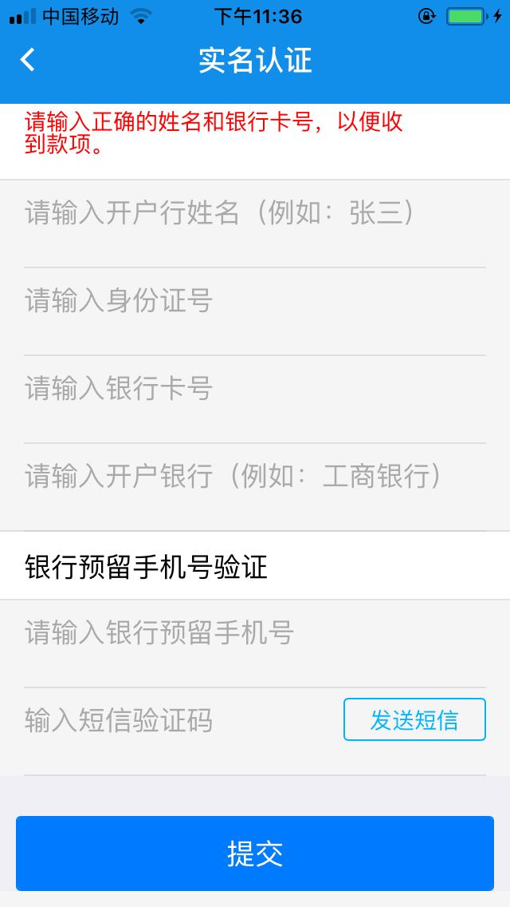

1、新手注册成功后先到【我的】去完善相应的信息，包括【微信账号】【支付宝账号】【交易密码】等，这些信息将会在在交易中使用到。

点击【实名认证】或【银行卡认证】，进入实名认证页面，输入正确的姓名和银行卡号，以便在交易的过程中收到相应的款项，如下图。

新手刚注册是没有WBT(财富币)，需要通过挂单来买入，进入【矿市】，点击【新手挂单】进入新手挂单页面，如下图：
价格和数量确定后，点击挂买单按钮，将会提示你输入交易密码，如下图：
点击确定后，在买家看板中显示你要买入的订单，这时就会有人看到你的订单，需要卖给你的人将会与你交易。如下图所示您的挂买单：
2、挂买单需要注意的事项：
在交易过程中，本App不是第三方交易平台，需要通过对方的收款账号手动去付款.
为保证用户信息的安全性,你所填写的银行账号信息也都是加密的。
卖家会在【矿市】->【新手挂单】->【买家看板】中看到挂单的信息，若是需要出售的，可以点击【卖给TA】按钮，如下图：
点击买个TA按钮，弹出输入交易密码对话框，系统将会收取你20%的手续费，例如您卖出100个WBT，系统将会扣除120个WBT。如下图：

卖家可在【矿市】->【新手挂单】->【交易信箱】中查看交易的订单

此时卖家正在等待买家的付款信息，还需等待卖家的二次确认订单，若是买家在48小时内没有把款项打给卖家，卖家可向管理员投诉，一经查实，工作人员会把相应的WBT返还给卖家，并永久对买家封号。
此时买家看到订单的状态如下：
买家先点击【交易账号】按钮，查看对方的收款信息，付完款后，点击【确认交易】，完成这一步交易。
但这一步还没有最终确认交易的完成，还需要等待卖方确认金额后，才能完成交易。
下图显示卖家要进行确认的订单。
以上是挂买单时需要注意的事项。
3、点对点交易事项：
你若是有足够的WBT，而且有朋友需要WBT，你可以直接转给对方，前提条件要要知道对方的买卖ID号码
进入【矿市】页面，你会发现上面三个面板【价格】【点对点】和【信箱】
点开【点对点】面板
你可以直接输入买房的ID号、卖出的数量和约定价格，点击卖出，并弹出对话框需要输入交易密码，系统需要收取20%的手续费
卖出后，在【信箱】中会发现卖出的订单
买方将会发现您的订单
买家可以点击【交易账号】查看卖家的账号信息，付款后点击【确认按钮】进行交易。同样买家也可以取消交易。
买家付款后，点击【确认交易】，弹出对话框并输入交易密码，确认购买后需要等待卖家的二次确认
下面是买方付款购买后显示的订单信息
卖家需要进行二次确认，买方购买后，卖家显示的列表如下图：
卖家确定收到买方付的款项后，点击【确认交易】，完成交易
注意：买家没有按照规定付款48小时后，千万不要点击确认交易，并请及时联系管理人员。
点击【确认交易】按钮后，此次交易完成。